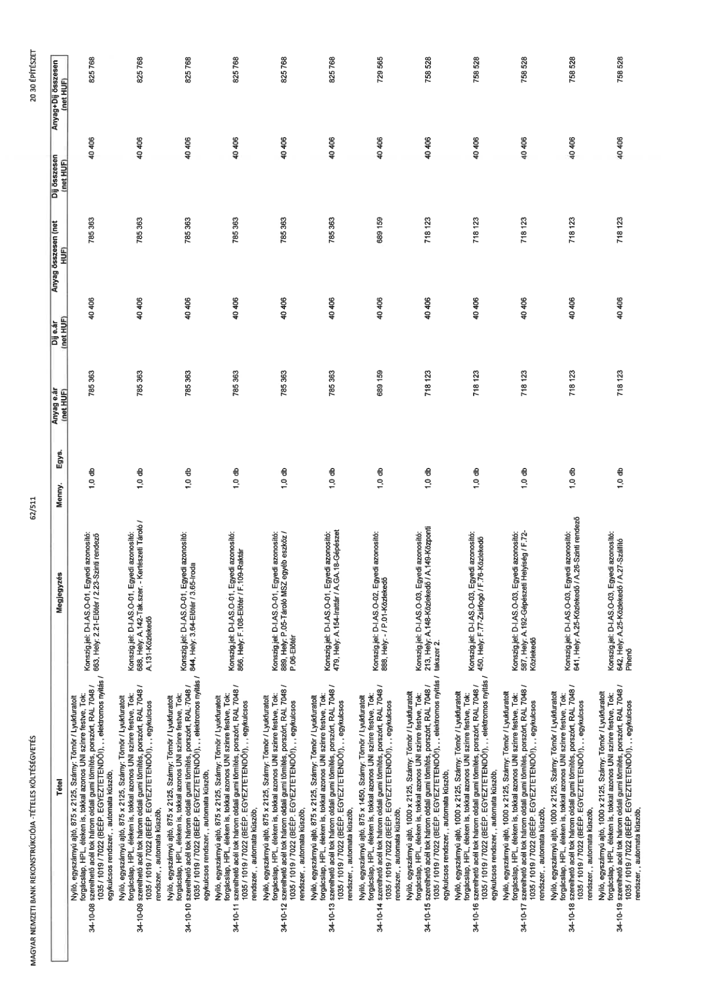

| Tétel | Megjegyzés | Menny. | Egys. | Anyag e.ár (net HUF) | Díj e.ár (net HUF) | Anyag összesen (net HUF) | Díj összesen (net HUF) | Anyag+Díj összesen (net HUF) |
|---|---|---|---|---|---|---|---|---|
| 34-10-08 Nyíló, egyszárnyú ajtó, 875 x 2125, Szárny: Tömör / Lyukfurtolt forgácslap, HPL éléken is, tokkal azonos UNI színre festve, Tok: szerelhető acél tok három oldali gumi tömítés, porszórt, RAL 7048 / 1035 / 1019 / 7022 (BÉÉP. EGYEZTETENDŐ!), , egykulcsos rendszer, , automata küszöb, | Konszign.jel: D-I.AS.O-01. Egyedi azonosító: 663, Hely: 2.21-Előtér / 2.23-Szinti rendező | 1,0 | db | 785 363 | 40 406 | 785 363 | 40 406 | 825 768 |
| 34-10-09 Nyíló, egyszárnyú ajtó, 875 x 2125, Szárny: Tömör / Lyukfurtolt forgácslap, HPL éléken is, tokkal azonos UNI színre festve, Tok: szerelhető acél tok három oldali gumi tömítés, porszórt, RAL 7048 / 1035 / 1019 / 7022 (BÉÉP. EGYEZTETENDŐ!), , egykulcsos rendszer, , automata küszöb, | Konszign.jel: D-I.AS.O-01. Egyedi azonosító: 688, Hely: A.142-Tak.szer. - Kertészeti Tároló / A.131-Közlekedő | 1,0 | db | 785 363 | 40 406 | 785 363 | 40 406 | 825 768 |
| 34-10-10 Nyíló, egyszárnyú ajtó, 875 x 2125, Szárny: Tömör / Lyukfurtolt forgácslap, HPL éléken is, tokkal azonos UNI színre festve, Tok: szerelhető acél tok három oldali gumi tömítés, porszórt, RAL 7048 / 1035 / 1019 / 7022 (BÉÉP. EGYEZTETENDŐ!), , elektromos nyitás / egykulcsos rendszer, , automata küszöb, | Konszign.jel: D-I.AS.O-01. Egyedi azonosító: 844, Hely: 3.64-Előtér / 3.65-Iroda | 1,0 | db | 785 363 | 40 406 | 785 363 | 40 406 | 825 768 |
| 34-10-11 Nyíló, egyszárnyú ajtó, 875 x 2125, Szárny: Tömör / Lyukfurtolt forgácslap, HPL éléken is, tokkal azonos UNI színre festve, Tok: szerelhető acél tok három oldali gumi tömítés, porszórt, RAL 7048 / 1035 / 1019 / 7022 (BÉÉP. EGYEZTETENDŐ!), , egykulcsos rendszer, , automata küszöb, | Konszign.jel: D-I.AS.O-01. Egyedi azonosító: 886, Hely: F.108-Előtér / F.109-Raktár | 1,0 | db | 785 363 | 40 406 | 785 363 | 40 406 | 825 768 |
| 34-10-12 Nyíló, egyszárnyú ajtó, 875 x 2125, Szárny: Tömör / Lyukfurtolt forgácslap, HPL éléken is, tokkal azonos UNI színre festve, Tok: szerelhető acél tok három oldali gumi tömítés, porszórt, RAL 7048 / 1035 / 1019 / 7022 (BÉÉP. EGYEZTETENDŐ!), , egykulcsos rendszer, , automata küszöb, | Konszign.jel: D-I.AS.O-01. Egyedi azonosító: 889, Hely: P.05-Tároló MSZ egyéb eszköz / P.06-Előtér | 1,0 | db | 785 363 | 40 406 | 785 363 | 40 406 | 825 768 |
| 34-10-13 Nyíló, egyszárnyú ajtó, 875 x 2125, Szárny: Tömör / Lyukfurtolt forgácslap, HPL éléken is, tokkal azonos UNI színre festve, Tok: szerelhető acél tok három oldali gumi tömítés, porszórt, RAL 7048 / 1035 / 1019 / 7022 (BÉÉP. EGYEZTETENDŐ!), , egykulcsos rendszer, , automata küszöb, | Konszign.jel: D-I.AS.O-01. Egyedi azonosító: 479, Hely: A.154-Irattár / A.GA.18-Gépészet | 1,0 | db | 785 363 | 40 406 | 785 363 | 40 406 | 825 768 |
| 34-10-14 Nyíló, egyszárnyú ajtó, 875 x 1450, Szárny: Tömör / Lyukfurtolt forgácslap, HPL éléken is, tokkal azonos UNI színre festve, Tok: szerelhető acél tok három oldali gumi tömítés, porszórt, RAL 7048 / 1035 / 1019 / 7022 (BÉÉP. EGYEZTETENDŐ!), , egykulcsos rendszer, , automata küszöb, | Konszign.jel: D-I.AS.O-02. Egyedi azonosító: 888, Hely: / P.01-Közlekedő | 1,0 | db | 689 159 | 40 406 | 689 159 | 40 406 | 729 565 |
| 34-10-15 Nyíló, egyszárnyú ajtó, 1000 x 2125, Szárny: Tömör / Lyukfurtolt forgácslap, HPL éléken is, tokkal azonos UNI színre festve, Tok: szerelhető acél tok három oldali gumi tömítés, porszórt, RAL 7048 / 1035 / 1019 / 7022 (BÉÉP. EGYEZTETENDŐ!), , elektromos nyitás / egykulcsos rendszer, , automata küszöb, | Konszign.jel: D-I.AS.O-03. Egyedi azonosító: 213, Hely: A.148-Közlekedő / A.149-Központi tak.szer 2. | 1,0 | db | 718 123 | 40 406 | 718 123 | 40 406 | 758 528 |
| 34-10-16 Nyíló, egyszárnyú ajtó, 1000 x 2125, Szárny: Tömör / Lyukfurtolt forgácslap, HPL éléken is, tokkal azonos UNI színre festve, Tok: szerelhető acél tok három oldali gumi tömítés, porszórt, RAL 7048 / 1035 / 1019 / 7022 (BÉÉP. EGYEZTETENDŐ!), , elektromos nyitás / egykulcsos rendszer, , automata küszöb, | Konszign.jel: D-I.AS.O-03. Egyedi azonosító: 450, Hely: F.77-Zsibongó / F.76-Közlekedő | 1,0 | db | 718 123 | 40 406 | 718 123 | 40 406 | 758 528 |
| 34-10-17 Nyíló, egyszárnyú ajtó, 1000 x 2125, Szárny: Tömör / Lyukfurtolt forgácslap, HPL éléken is, tokkal azonos UNI színre festve, Tok: szerelhető acél tok három oldali gumi tömítés, porszórt, RAL 7048 / 1035 / 1019 / 7022 (BÉÉP. EGYEZTETENDŐ!), , egykulcsos rendszer, , automata küszöb, | Konszign.jel: D-I.AS.O-03. Egyedi azonosító: 587, Hely: A.192-Gépészeti Helyiség / F.72-Közlekedő | 1,0 | db | 718 123 | 40 406 | 718 123 | 40 406 | 758 528 |
| 34-10-18 Nyíló, egyszárnyú ajtó, 1000 x 2125, Szárny: Tömör / Lyukfurtolt forgácslap, HPL éléken is, tokkal azonos UNI színre festve, Tok: szerelhető acél tok három oldali gumi tömítés, porszórt, RAL 7048 / 1035 / 1019 / 7022 (BÉÉP. EGYEZTETENDŐ!), , egykulcsos rendszer, , automata küszöb, | Konszign.jel: D-I.AS.O-03. Egyedi azonosító: 641, Hely: A.25-Közlekedő / A.26-Szinti rendező | 1,0 | db | 718 123 | 40 406 | 718 123 | 40 406 | 758 528 |
| 34-10-19 Nyíló, egyszárnyú ajtó, 1000 x 2125, Szárny: Tömör / Lyukfurtolt forgácslap, HPL éléken is, tokkal azonos UNI színre festve, Tok: szerelhető acél tok három oldali gumi tömítés, porszórt, RAL 7048 / 1035 / 1019 / 7022 (BÉÉP. EGYEZTETENDŐ!), , egykulcsos rendszer, , automata küszöb, | Konszign.jel: D-I.AS.O-03. Egyedi azonosító: 642, Hely: A.25-Közlekedő / A.27-Szállító Pihenő | 1,0 | db | 718 123 | 40 406 | 718 123 | 40 406 | 758 528 |
